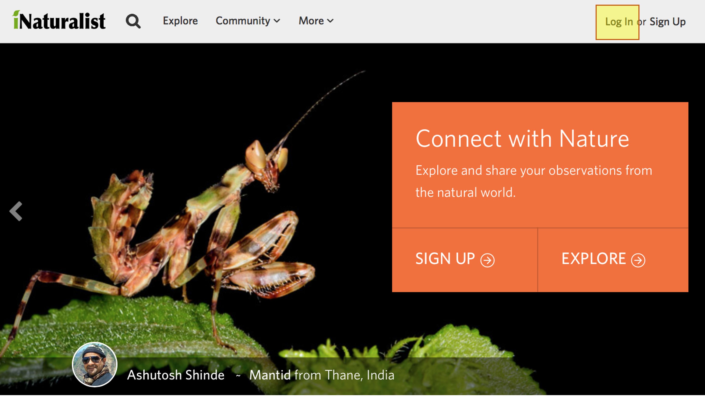
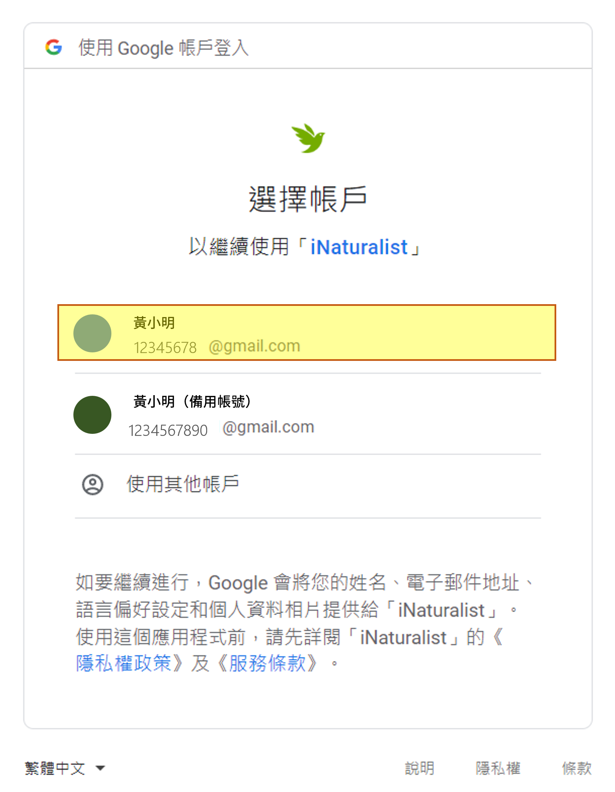
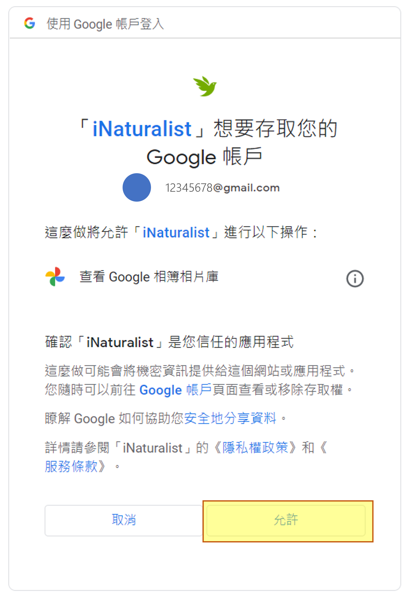
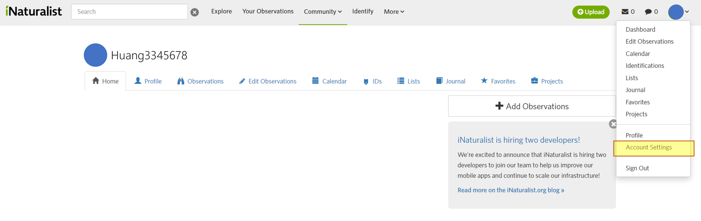
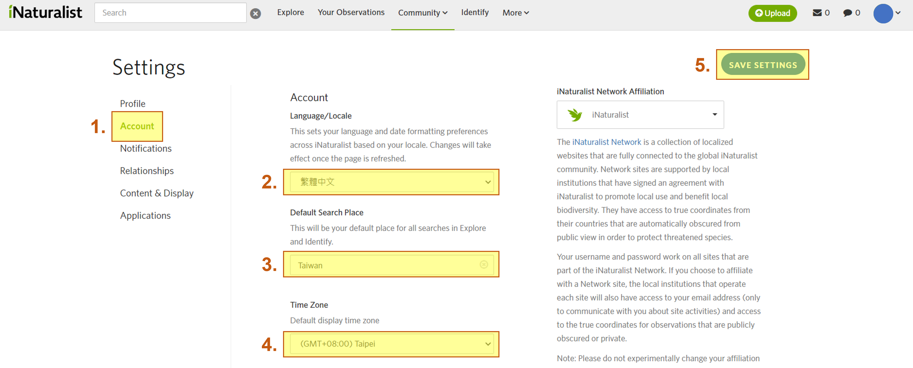

4 註冊及設定
4.1 註冊及設定
若您要上傳觀察記錄、鑑定以及使用愛自然的各項功能，您必須要註冊一個帳號，註冊方式可透過網頁、手機等行動裝置來進行。
4.2 電腦網頁註冊帳戶
- 使用瀏覽器開啟 http://inaturalist.org
- 開啟之後，請先點選網頁右上角或橘框的 Log in (Figure 4.1)

- 點選畫面右下角「Sign in wuth Google」(以谷歌帳號登入)的按鈕 (Figure 4.2)

- 選擇自己常用的谷歌帳號，並且允許存取帳戶(Figure 4.3)


4.3 電腦網頁設定語言及位置資訊
- 登入成功後，可以看見個人的控制面板介面，滑鼠移至右上角，出現下拉式選單後，選擇「Account Settings」(帳號設定) (?fig-5)

- 在頁面中選擇左方的Account(帳號)，將中央的選項依序改為繁體中文(語言)、Taiwan(地區)、(GMT+08:00) Taipei(時區)，完成後點選藍色「SAVE SETTINGS」(儲存設定)按鈕。

- 重新整理網頁後，介面就會變成中文了
4.4 手機app註冊帳戶
4.4.1 Android 的註冊方式
由 Google Play 商店下載好inaturalist程式後並開啟，如果您已經有帳號可點選”登入 電子郵件”登入帳號。  圖 2.5 程式開啟後畫面
圖 2.5 程式開啟後畫面
4.4.1.0.1 如果您是新用戶，可點選下方”立即註冊”
進入畫面後，填寫信箱、自訂密碼、自訂使用者名稱(ID)，完成後按註冊，即會收到電子郵件確認註冊成功。  圖 2.6 註冊頁面
圖 2.6 註冊頁面
4.4.1.0.2 使用google、facebook第三方登入後修改使用者名稱(ID)
 圖 2.7 點選編輯個人資料
圖 2.7 點選編輯個人資料
 圖 2.8 點選第一欄自訂使用者名稱(ID)
圖 2.8 點選第一欄自訂使用者名稱(ID)